▲ 2024년 11월 부분변경된 기아 더 뉴 스포티지. 세로형 스타맵 주간주행등과 수평 패턴 그릴로 앞모습이 바뀌었다 사진=기아
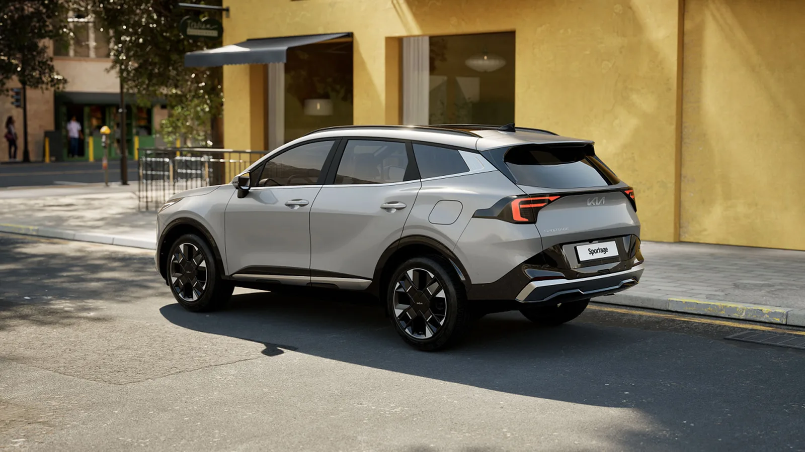
▲ 2024년 11월 부분변경된 '더 뉴 스포티지'의 후측면. 리어램프에도 스타맵 시그니처 라이팅이 들어갔다 사진=기아
8월 한 달 동안 국내에서 스포티지는 3,874대가 팔렸습니다. 기아 국내 판매에서는 쏘렌토·카니발에 이어 세 번째였고, 해외 물량까지 더하면 4만 6,239대로 기아 차종 가운데 가장 많이 팔린 차였습니다. 문제는 타이밍입니다. 현대차가 8월 19일 5세대 '디 올 뉴 투싼'의 디자인을, 9월 18일 파워트레인을 공개했고, 10월 중 가격을 공개하고 국내 판매에 들어간다고 공식 발표했습니다. 스포티지를 보러 간 사람이라면 "한 달만 기다려 볼까"를 한 번쯤 생각하게 됩니다.
이 글은 CarPrism이 직접 시승한 기록이 아닙니다. 부분변경 스포티지(NQ5 PE)를 다룬 국내 시승기 7편과 해외 8개 매체의 리뷰 11건, 오너 실연비 데이터 약 1만 9천 명분을 모아서 다시 정리한 종합 리뷰입니다. 매체별 평가는 2026년 9월 27일 각 원문을 다시 열어 대조했습니다. 어떤 점은 매체들이 입을 모아 칭찬했고, 어떤 점은 나라를 가리지 않고 같은 불만이 나왔습니다. 그 '합의'를 기준으로 지금 스포티지를 사도 되는지 따져 봤습니다.
▲ 국내 대리점에 전시된 더 뉴 스포티지 1.6 가솔린 터보 시그니처(2WD, 스노우 화이트 펄) ⓒ Damian B Oh, Wikimedia Commons (CC BY-SA 4.0)
1. 부분변경에서 바뀐 것, 시승기들이 먼저 짚은 부분
2024년 11월 계약을 시작한 '더 뉴 스포티지'는 기아 표현으로 "신차 수준"의 디자인 변경을 거쳤습니다. 전면은 세로형 주간주행등(스타맵 시그니처 라이팅)과 수평 패턴의 대형 블랙 그릴로 바뀌었고, 실내는 송풍구를 가로로 길게 정리하고 더블 D컷 스티어링 휠을 넣었습니다. 여기에 차세대 인포테인먼트 ccNC와 무선 업데이트(OTA), 국내 출시 기아 모델 최초로 운전자 전방 주시 경고 카메라, 헤드업 디스플레이가 추가됐습니다.
그런데 시승기들이 가장 먼저 언급한 것은 디자인이 아니라 변속기였습니다. 1.6 가솔린 터보는 부분변경 전 7단 DCT(듀얼 클러치) 대신 8단 자동변속기를 달았습니다. 글로벌오토뉴스, 오토헤럴드, 카앤모어 모두 이 변화를 부분변경의 핵심으로 꼽았습니다. 저속에서 울컥거리던 DCT 특유의 감각이 사라지고 변속이 매끄러워졌다는 평가입니다. 호주 드라이브(Drive.com.au)도 현지에 들어간 1.6T와 디젤의 8단 자동을 두고 부드럽다고 적었습니다. 다만 오토뷰는 기어 레버 대신 들어간 다이얼식 변속기의 조작감이 흐릿해 어떤 단을 골랐는지 확신이 덜 든다고 지적했습니다.
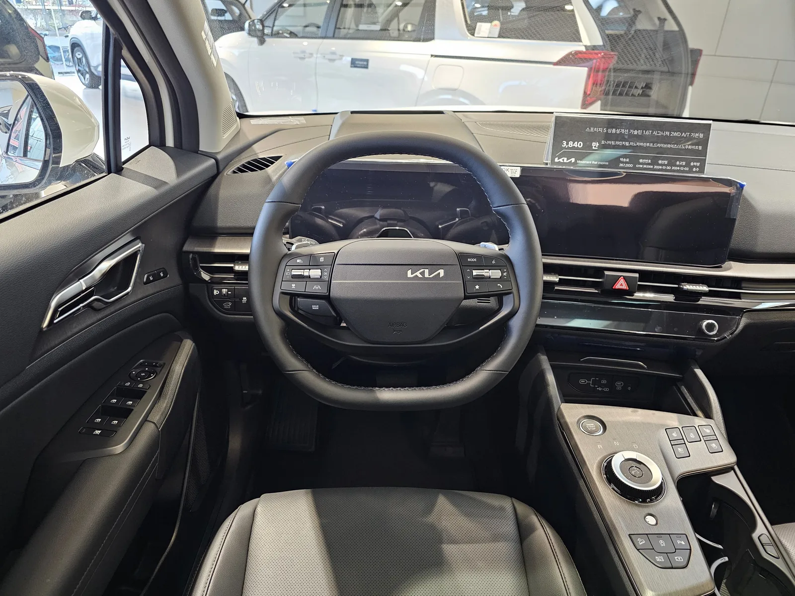
▲ 국내 전시장에 놓인 더 뉴 스포티지 1.6 가솔린 터보 시그니처의 운전석. 스티어링 휠 뒤 계기판과 이어진 곡면 디스플레이, 센터 콘솔의 다이얼식 변속기와 버튼류가 보인다 ⓒ Damian B Oh, Wikimedia Commons (CC BY-SA 4.0)
정숙성 보강도 확인됩니다. 기아는 전륜 스트럿에 2방향 댐퍼를 달고 B필러와 크래시패드 아래, 도어 트림에 흡차음재를 더했다고 밝혔습니다. 오토뷰는 일반 아스팔트 실내 소음이 부분변경 전 61dBA에서 60.4dBA로 줄었다고 계측했습니다. 큰 차이는 아니지만 방향은 맞다는 뜻입니다.
📍 해외 리뷰를 읽을 때 주의할 점
같은 스포티지라도 시장마다 차가 다릅니다. 유럽형은 슬로바키아 질리나 공장 생산으로 전장 4,540mm, 휠베이스 2,680mm의 짧은 차체입니다. 국내형(전장 4,685mm, 휠베이스 2,755mm)과 같은 긴 차체는 호주·미국 사양입니다. 파워트레인도 다릅니다. 미국 기본형은 2.5L 자연흡기(187마력)이고, 영국 1.6T 가솔린은 150PS급입니다. 그래서 이 글에서는 2열·트렁크 수치는 국내와 같은 차체를 쓰는 호주·미국 리뷰를, 하이브리드 주행 감각은 구성이 비슷한 1.6T 하이브리드 리뷰를 중심으로 봤습니다.
2. 매체별 평가 한 줄 요약
국내 7개, 해외 8개 등 15개 매체의 평가를 표로 모았습니다. 해외 리뷰 11건은 Drive·CarsGuide·Carwow·Auto Express·Parkers·Autocar 각 1건, Car and Driver 2건(종합 리뷰·계측 시험기), MotorTrend 3건(시승기·계측 시험기·올해의 SUV 심사기)입니다. 좋았던 점과 아쉬운 점은 원문 표현을 옮기지 않고 요지만 정리했습니다. 점수는 매체가 공개한 경우에만 적었습니다.
| 매체(게재일) | 시승 모델 | 좋았던 점 | 아쉬운 점 |
|---|---|---|---|
| 글로벌오토뉴스 (2024.12) | 1.6T 2WD | 8단 자동으로 승차감 개선, ccNC 인포테인먼트, 에어백 8개와 충실한 ADAS | 가속 때 엔진 부밍음, 언덕길에서 가속 페달을 깊게 밟게 됨 |
| 오토헤럴드 (2025.01) | 1.6T | 외관 고급감, 8단 변속기의 매끄러운 반응, 수평형 실내 | 뚜렷한 지적 없음 |
| 오토뷰 (2025.01) | 1.6T X-Line 2WD | 실내 소음 소폭 감소, 방지턱에서 후륜 안정적, 편의·ADAS 풍부 | 다이얼 변속기 조작감, 반복 제동 시 제동 거리 증가, 직진 중 잦은 조향 보정, 19인치 휠의 날카로운 요철 충격 |
| 카앤모어(위키트리) (2024.12) | 1.6T X-Line 2WD, 19인치 | 투싼보다 나은 서스펜션 감쇠, 엔진·8단 궁합 | 부분변경치고 큰 가격 인상, 터보랙 |
| 아이뉴스24 (2025.02) | 2.0 LPi | 연료비 부담 적음, 진동·소음 적음 | 급가속 때 회전수를 높여야 힘이 붙음, 트렁크 바닥이 7~8cm 높음 |
| 아시아투데이 (2025.04) | 2.0 LPi 시그니처 | 유지비, 정숙성, 일상 주행에 충분한 가속 | 가솔린·하이브리드보다 낮은 146마력, 트렁크 바닥 높이 |
| 더퍼블릭 (2025.12) | 1.6T 하이브리드 | E-라이드로 방지턱 충격 완화, 눈길 고속도로 안정감, HUD·ccNC 반응 | 가격 부담 |
| 매체(국가) | 시승 모델 | 점수 | 좋았던 점 | 아쉬운 점 |
|---|---|---|---|---|
| Drive (호주) | 하이브리드 2WD·AWD, 1.6T, 디젤 | 7.6/10 | 장비 대비 가격, 넓은 실내, 좋은 시야 | 하이브리드 효율이 기대 이하, 가솔린 연비, 하위 트림 직물 시트, 예민한 브레이크 |
| CarsGuide (호주) | 가솔린, 하이브리드 | 7.0/10 | 잘 다듬어진 승차감, 고속에서 정확한 조향, 하이브리드 효율 | 저속 조향 이질감, 거친 노면 소음, 하위 트림 빈 버튼, 2열 공조 조절 없음 |
| Carwow (영국) | 1.6T, 하이브리드 | 8/10 | 183cm 성인이 앉아도 넉넉한 2열·트렁크, 만듦새, 트림 구성 | 시내 저속 승차감, 급가속 때 엔진 소음, 경쟁차보다 낮은 효율 |
| Auto Express (영국) | 가솔린, 하이브리드, PHEV | 4/5 | 동급 최상위 실용성, 낮은 트렁크 턱, 회생제동 패들, 고속 정숙성 | 변속·시동 전환 때 울컥임, 번거로운 공조·미디어 전환 버튼, 천장형 2열 가운데 벨트 |
| Parkers (영국) | 하이브리드, 1.6T | 4/5 | 넉넉한 2열 레그룸, 직관적인 인포테인먼트, 고속 정숙성, 7년 보증 | 코너에서 일관성이 떨어지는 가벼운 조향, 느린 6단 변속, 과민한 운전자 보조 |
| Autocar (영국) | 하이브리드, 1.6T | 8/10 | 전보다 매끄러워진 하이브리드, 경쟁차보다 긴 2열 레그룸, 쓰기 쉬운 화면 | 부족한 2열 머리 공간, 큰 휠의 거친 승차감, 세게 밟을 때 하이브리드 소음, 연비 |
| Car and Driver (미국, 2건) | 하이브리드 SX 프레스티지 AWD | 8.5/10 | 일반형보다 빠른 가속, 부드러운 승차감, 넓은 공간 | 기대보다 낮은 연비, 장거리에서 피곤한 시트 쿠션, 19인치 휠에서 큰 요철 때 떨림(시험기) |
| MotorTrend (미국, 3건) | 하이브리드 SX 프레스티지 AWD | - | CVT 없는 자연스러운 6단 변속감, 19인치 휠에 맞춘 서스펜션 재조정, 최대 적재 공간 | 공인 연비가 CR-V·CX-50 하이브리드보다 낮음, 공조·미디어 전환 패널 |
국내 시승기는 대체로 우호적이었습니다. 반면 해외 매체는 경쟁차와 나란히 놓고 비교하다 보니 지적이 더 구체적입니다. 영국 Autocar는 하이브리드를 두고 제 역할은 잘하지만 감흥은 적다고 요약했습니다("a fine job - if an uninspiring one"). 미국 MotorTrend는 2026 올해의 SUV 후보에 스포티지를 올렸지만 최종 결선에는 넣지 않았고, 기사 제목도 '좋지만 획기적이진 않다'였습니다.
3. 칭찬과 지적, 매체들이 얼마나 같은 말을 했나
15개 매체의 평가에서 반복된 내용을 항목별로 세어 봤습니다. '다수'는 해당 주제를 다룬 기사 대부분이 같은 방향으로 평가했다는 뜻입니다.
| 항목 | 평가 방향 | 합의도 | 근거 |
|---|---|---|---|
| 2열 공간 | 칭찬 | 높음 | Carwow·Auto Express·Parkers·Drive·CarsGuide가 넉넉하다고 평가. Autocar는 2열 레그룸 750mm로 캐시카이(710mm)보다 길다고 계측했지만, 머리 공간이 부족해 가족용 SUV다운 공간은 아니라고 봤다 |
| 트렁크·적재 | 칭찬 | 높음 | MotorTrend는 제원상 최대 적재 공간이 CR-V 하이브리드보다 크다고 비교. Autocar는 2열이 완전히 평평하게 접히지 않는 점을 지적 |
| 1.6T 8단 자동 | 칭찬 | 높음 | 국내 1.6T 시승기 4편 모두 DCT 대비 개선을 언급 |
| 인포테인먼트 | 대체로 칭찬 | 높음 | 화면 품질과 사용성은 호평. 공조·미디어 전환식 패널은 MotorTrend·Auto Express가 비판 |
| 하이브리드 연비 | 지적 | 매우 높음(해외) | Drive·Car and Driver·MotorTrend·Autocar·Carwow·Auto Express가 경쟁 하이브리드보다 효율이 낮다고 평가(CarsGuide는 효율을 장점으로 꼽음). 국내 오너 실연비는 공인값에 근접 |
| 저속 승차감 | 지적 | 중간 | 영국 매체와 국내 카앤모어·오토뷰는 단단하다고 평가. 미국 MotorTrend·호주 CarsGuide는 편안하다는 쪽이지만 Drive는 하이브리드가 가장 단단했다고 적음. 19인치 휠에서 불리하다는 지적(오토뷰·Autocar·Car and Driver)이 반복 |
| 엔진 소음 | 지적 | 중간 | 국내 글로벌오토뉴스·오토뷰, 영국 Carwow·Autocar, 호주 CarsGuide가 가속 때 엔진음 유입을 언급 |
| 하이브리드 6단 변속 | 엇갈림 | 낮음 | 미국 매체는 CVT보다 자연스럽다고 호평. 영국 Auto Express는 울컥임, Parkers는 느린 변속, Drive는 고속 추월 때 답답함을 지적 |
| 운전자 보조 경고 | 지적 | 중간 | Drive·CarsGuide·Autocar가 과속 경고가 잦다고 지적. Parkers는 오너들의 불필요한 제동 불만을 소개 |
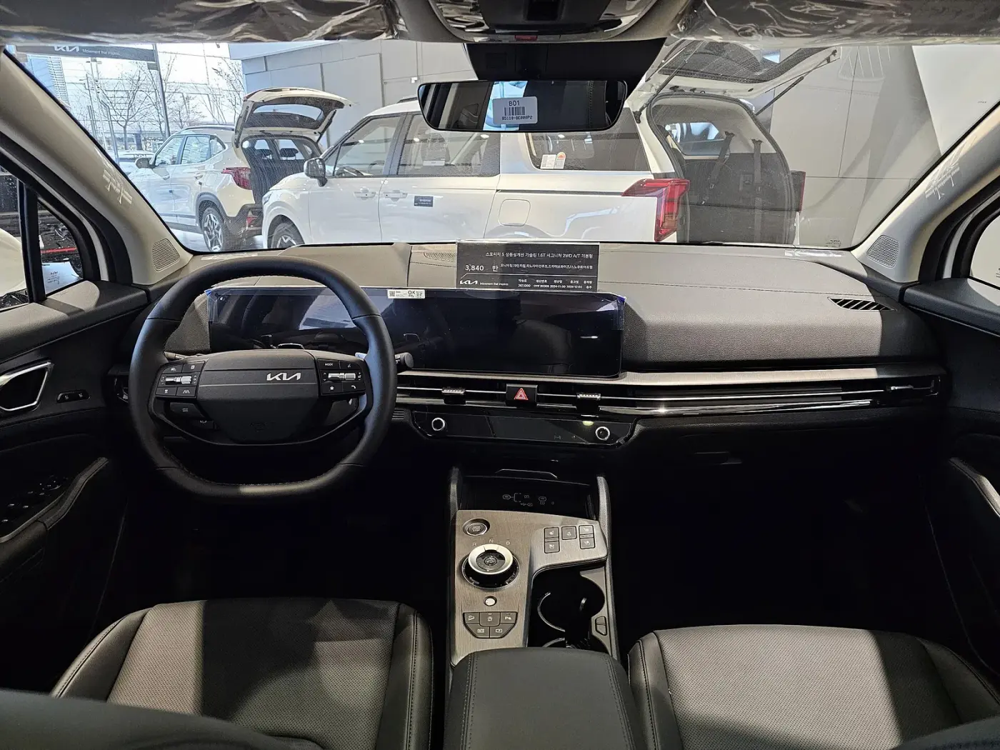
▲ 부분변경 스포티지 시그니처의 실내. 파노라믹 커브드 디스플레이와 더블 D컷 스티어링 휠이 들어갔다 ⓒ Damian B Oh, Wikimedia Commons (CC BY-SA 4.0)
눈여겨볼 대목은 공조·미디어 전환 패널입니다. 센터페시아 아래 터치 패널 하나를 버튼으로 바꿔 가며 공조와 오디오 조작에 번갈아 쓰는 방식인데, MotorTrend와 Auto Express가 불편하다고 지적했습니다. MotorTrend 에디터 한 명은 아주 강한 표현까지 썼습니다. 반대로 Autocar는 이 단축키 덕분에 조작이 쉬워진다고 봤고, 국내 시승기에서는 이 부분을 문제 삼은 기사가 없었습니다. 시승 시간이 짧으면 드러나지 않는 불편일 가능성이 있으니 전시장에서 직접 몇 번 전환해 보는 편이 좋습니다.
4. 파워트레인별 제원·인증 연비 vs 시승기·오너 실연비
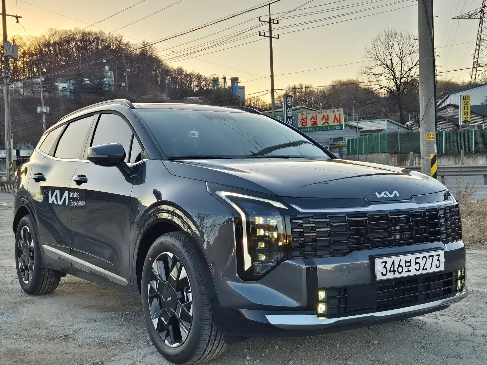
▲ 국내 도로의 더 뉴 스포티지 하이브리드. 국내 스포티지 판매는 1.6T 하이브리드·1.6T 가솔린·2.0 LPi 3종으로 나뉜다 ⓒ Avante2025, Wikimedia Commons (CC BY 4.0)
국내 판매 파워트레인은 세 가지입니다. 디젤은 2024년 11월 부분변경 때 라인업에서 빠졌습니다. 기아의 부분변경 계약 개시 자료와 현재 가격표 모두 1.6 가솔린 터보, 2.0 LPi, 1.6 가솔린 터보 하이브리드만 싣고 있습니다. 호주 등 일부 해외 시장에는 디젤이 남아 있지만 국내에서는 선택지가 아닙니다.
| 항목 | 1.6 가솔린 터보 | 1.6T 하이브리드 | 2.0 LPi |
|---|---|---|---|
| 출력 | 180마력 / 27.0kgf·m | 시스템 235마력 / 37.4kgf·m (엔진 180마력 + 모터 47.7kW / 264Nm) | 146마력 / 19.5kgf·m |
| 변속기 | 8단 자동 | 6단 자동 | 6단 자동 |
| 구동 | 2WD / 4WD | 2WD / 4WD | 2WD |
| 복합 인증 연비 | 2WD 11.5~12.3km/L 4WD 10.5~11.1km/L | 2WD 15.6~16.3km/L 4WD 14.3~14.7km/L | 8.6~9.2km/L |
| 국내 시승기 체감 | 실측 연비 공개 없음 | 실측 연비 공개 없음 | 9.0km/L(1,050km 누적)·7.0km/L(도심 위주 153km, 이상 아이뉴스24), 9.3km/L(약 150km, 아시아투데이) |
| 오너 실연비(마이클) | 10.64km/L(11,590명, 공인 12.3km/L 대비 87%) 최근 6개월 평균 10.69km/L | 16.19km/L(7,377명, 공인 16.3km/L 대비 99%) 최근 6개월 평균 15.78km/L | - |
| 해외 시승 연비(환산) | 호주 1.6T AWD 7.9L/100km(약 12.7km/L, Drive) | 호주 2WD 6.1L/100km(약 16.4km/L), AWD 6.5L/100km(약 15.4km/L, Drive) 영국 약 44mpg(약 15.6km/L, Auto Express) 미국 AWD 고속 75mph 31mpg(약 13.2km/L, Car and Driver) | - |
※ 공식 제원·인증 연비는 기아 2027년형 스포티지 가격표·카탈로그 기준입니다. 하이브리드 시스템 최고출력 235마력·최대토크 37.4kgf·m는 기아 국내 카탈로그 표기값이고, 해외 사양은 영국 235bhp(Autocar 제원), 미국 232hp(Car and Driver·MotorTrend 제원)입니다. 영국 mpg는 1mpg≈0.354km/L, 미국 mpg는 1mpg≈0.425km/L로 환산했습니다. 오너 실연비는 연비 기록 앱 마이클(mycle)이 공개한 대표값(8월 수치)과 최근 6개월 평균으로, 2026년 9월 25일 마이클 데이터 기준이며 9월 27일 조회했습니다.
이 표에서 흥미로운 점은 하이브리드 연비를 두고 해외 매체와 국내 오너의 평가가 다르다는 것입니다. 해외 매체는 대부분 연비를 약점으로 꼽았습니다. Car and Driver는 AWD 하이브리드가 시속 120km 고속 코스에서 EPA 수치보다 7mpg 낮게 나왔다고 적었고, MotorTrend는 하이브리드 추가 비용을 연료비로 회수하는 데 약 11년이 걸린다고 계산했습니다. Drive도 호주 공인 수치 4.9L/100km(약 20.4km/L)와 실제 6.1L/100km 사이의 차이를 지적했고, Autocar는 같은 날 비슷한 코스에서 효율이 가장 좋은 경쟁차가 15~20% 더 나은 연비를 낸다고 적었습니다. 반면 호주 CarsGuide는 효율 항목에 8점(10점 만점)을 줬습니다.
반면 마이클에 기록한 국내 오너 7,377명의 수치는 공인 16.3km/L의 99% 수준이고, 최근 6개월 평균(15.78km/L)으로 봐도 97%입니다. 두 결과가 모순되는 것은 아닙니다. 국내와 해외의 연비 인증 방식이 다르고, 해외 매체는 토요타 RAV4·혼다 CR-V 같은 직병렬식(e-CVT) 하이브리드와 직접 비교했기 때문입니다. 스포티지 하이브리드는 일반 6단 자동변속기에 모터를 붙인 병렬형이라 고속에서는 엔진 개입이 많습니다. 정리하면 "공인 연비는 실제로 나오지만, 동급 최고 효율의 하이브리드는 아니다"가 정확한 표현입니다.
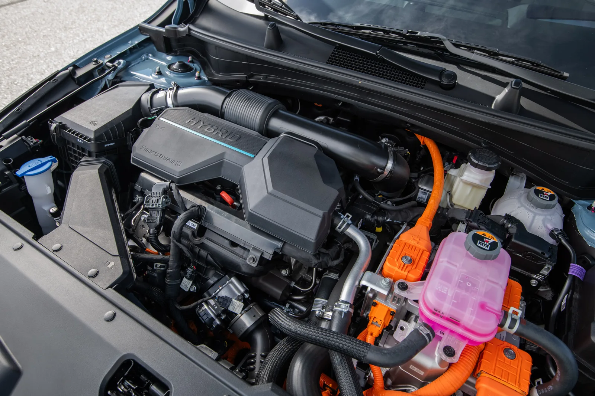
▲ 스포티지 하이브리드 엔진룸. 1.6 터보 엔진과 변속기 사이에 모터를 둔 구조다(미국 판매 2027년형) 사진=기아
하이브리드 변속감은 평가가 가장 엇갈린 항목입니다. 미국 MotorTrend는 CVT 경쟁차보다 '일반 차처럼' 느껴진다고 호평했고, 스포츠 모드가 재미있다고까지 했습니다. 영국 Auto Express는 변속할 때와 엔진이 켜지고 꺼질 때 울컥임이 느껴진다고 지적했습니다. 호주 Drive는 엔진 전환은 알아채기 어렵지만 6단 기어비 때문에 고속 추월이 굼뜨다고 봤습니다. 부분변경 후 패들 시프트로 회생제동 단계를 조절할 수 있게 된 점은 Drive·Auto Express·Autocar가 언급했습니다. 기아는 여기에 내비게이션 정보에 맞춰 회생제동을 자동 조절하는 스마트 회생제동을 더했다고 밝혔습니다.
1.6 가솔린 터보는 국내 시승기의 초점이었습니다. 8단 자동 덕분에 저속이 부드러워졌다는 데 이견이 없었지만, 오토뷰는 100km/h 급제동을 반복할수록 제동 거리가 늘었고(최단 36.86m, 최장 38.28m), 직진 중에도 조향 보정을 꾸준히 해야 했다고 적었습니다. 가속 때 엔진음이 실내로 들어온다는 지적은 글로벌오토뉴스와 오토뷰에서 공통으로 나왔습니다.
2.0 LPi는 누적 1,050km 9.0km/L(아이뉴스24), 약 150km 9.3km/L(아시아투데이)로 인증 수치(8.6~9.2km/L)와 비슷하거나 조금 높았습니다. 다만 아이뉴스24가 혼잡한 도심 위주로 달린 153km 구간은 7.0km/L였습니다. 두 시승기 모두 정숙성과 연료비를 장점으로 꼽았습니다. 아이뉴스24는 급가속 때 회전수를 3,000rpm 가까이 올려야 힘이 제대로 붙는다고 했고, 두 매체 모두 LPG 탱크 때문에 트렁크 바닥이 높다는 점을 짚었습니다(아이뉴스24 기준 7~8cm).
5. 2열과 트렁크, 이 차를 사는 가장 확실한 이유
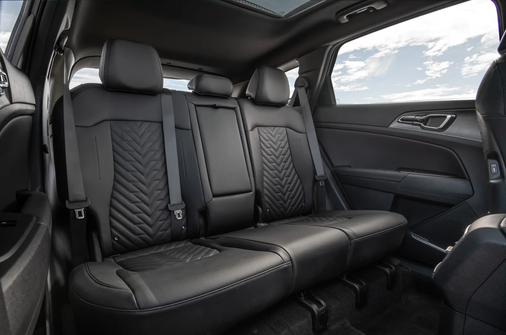
▲ 스포티지 2열. 해외 매체 다수가 동급 최상위권 레그룸으로 평가했다(미국 판매 2027년형) 사진=기아
칭찬이 가장 일관된 항목은 2열입니다. 국내형 스포티지는 휠베이스 2,755mm로, 유럽형(2,680mm)보다 75mm 깁니다. 그런데도 짧은 유럽형을 탄 영국 매체 가운데 Carwow·Auto Express·Parkers는 2열 공간을 넉넉하다고 평가했습니다. Carwow는 키 183cm(6피트) 성인이 같은 키의 운전자 뒤에 앉아도 레그룸이 충분하다고 했고, Autocar는 2열 레그룸을 750mm로 계측해 닛산 캐시카이(710mm), 복스홀 그랜드랜드(730mm)보다 길다고 적었습니다.
지적도 있습니다. Autocar는 파노라마 선루프를 단 시험차의 2열 머리 공간이 920mm로 토요타 RAV4보다 80mm 좁다고 계측했고, Auto Express와 CarsGuide도 선루프 차량의 머리 공간을 언급했습니다. Carwow는 앞좌석 레일과 가운데 바닥 턱 때문에 발 공간이 좁다고 봤습니다. 호주 Drive는 키 큰 운전자 뒤에 키 큰 성인이 앉으면 답답할 수 있다고 적었습니다. 키 큰 가족이 많다면 선루프 옵션은 한 번 더 생각해 볼 만합니다.
국내 사양에서 확인한 2열 구성은 다음과 같습니다. 2027년형 가격표 기준으로 2열 6:4 분할 리클라이닝 시트, 2열 에어벤트, 2열 USB-C 2개가 전 트림 기본입니다. 노블레스부터 2열 이중접합 차음 유리가, 시그니처부터 2열 열선시트와 트렁크에서 2열을 접는 리모트 폴딩 레버가 들어갑니다. 다만 접으면 방석이 아래로 내려가는 폴드&다이브 시트는 가솔린 모델에만 있습니다. 하이브리드와 LPi는 일반 6:4 폴딩입니다.
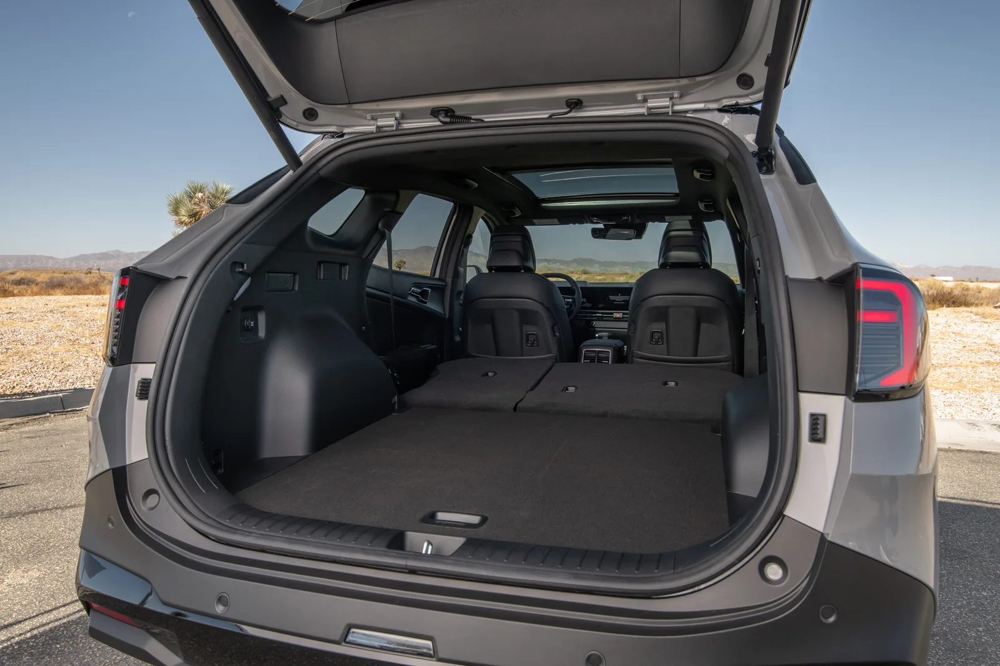
▲ 2열을 접은 스포티지 적재 공간(미국 판매 2027년형). 오토뷰는 국내형에서 트렁크 입구부터 2열 끝까지 약 1.7m를 확인했다 사진=기아
트렁크 용량은 국내 공식 수치를 확인하지 못했습니다. 기아의 2027년형 가격표·카탈로그와 홈페이지 제원 페이지 모두 트렁크 용량을 표기하지 않고, 시승기마다 적힌 수치도 서로 달라 이 글에서는 국내 수치를 싣지 않았습니다. 국내형과 같은 차체인 호주 사양은 Drive 기준 가솔린 543L, 하이브리드 586L, 2열을 접으면 1,829L·1,872L입니다. 가솔린보다 하이브리드 수치가 큰 점도 눈에 띕니다. CarsGuide는 호주 하이브리드에는 임시용 스페어타이어만 실린다고 적었습니다. MotorTrend도 미국형 하이브리드의 최대 적재 공간이 가솔린 모델보다 0.4큐빅피트(약 11L)밖에 작지 않다고 짚었습니다.
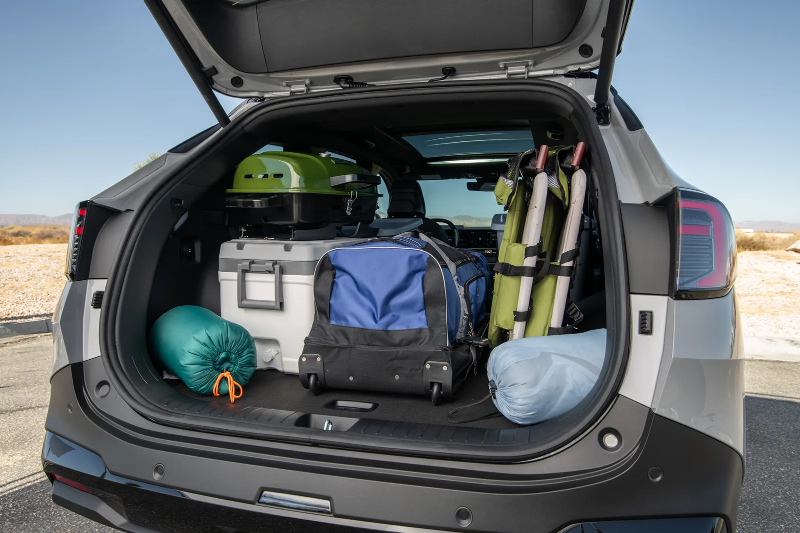
▲ 캠핑 짐을 실은 스포티지 트렁크(미국 판매 2027년형). Auto Express는 동급에서 가장 낮은 편인 트렁크 턱을 장점으로 꼽았다 사진=기아
Auto Express는 트렁크 입구 턱이 낮아 무거운 짐을 싣기 쉽다고 평가했습니다. 반면 Autocar는 2열을 접어도 바닥이 완전히 평평하지 않고, 적재 길이(유럽형 기준 850mm)가 짧다고 지적했습니다. 국내 LPi는 탱크 때문에 바닥이 7~8cm 높다는 점을 한 번 더 기억해 두면 좋습니다. 유모차나 캠핑 장비처럼 높이가 있는 짐을 자주 싣는다면 가솔린이나 하이브리드가 유리합니다.
6. 오너들은 몇 점을 줬나
공개된 오너 평가도 확인했습니다. 네이버 마이카 오너평가 페이지는 CarPrism이 직접 조회하지 못해 보도된 수치를 재인용합니다. 오토버프의 2025년 11월 18일 보도에 따르면 그 시점 네이버 마이카의 스포티지 오너평가는 종합 8.6점이었고, 항목별로는 디자인 9.4점, 주행 9.1점, 거주성 9.0점, 품질 8.7점, 연비 7.9점, 가격 7.5점이었습니다. 2026년 9월 21일 뉴스와 보도는 평가 플랫폼을 밝히지 않았지만 종합 8.72점, 디자인 9.4점, 주행·거주성 각 9.2점, 연비 8.0점, 가격 7.6점으로 비슷한 분포를 전했습니다.
점수 분포는 시승기 합의도와 거의 겹칩니다. 디자인과 공간은 높게, 가격은 가장 낮게 평가됐습니다. 뉴스와는 원하는 옵션을 넣으려면 시그니처 같은 상위 트림으로 올라가야 한다는 불만과 함께, 하체가 단단해 잔충격이 전해진다는 의견도 있다고 전했습니다. 2027년형에서 기아가 내비게이션과 고속도로 주행 보조를 전 트림 기본으로 돌린 것도 이 불만을 의식한 조치로 볼 수 있습니다. 이 변화는 2027 스포티지 연식변경 기사에서 자세히 다뤘습니다.
📍 해외 오너 조사는 반대 신호도
영국 Auto Express의 2026년 드라이버 파워 오너 만족도 조사에서 스포티지는 50개 모델 중 37위, 기아 브랜드는 30개 브랜드 중 25위였습니다(Auto Express 리뷰, 브랜드 순위는 Carwow도 인용). Parkers는 영국 오너 후기에서 운전자 보조 장치가 이유 없이 제동한다는 불만이 여러 건 나왔다고 전했습니다. 국내 오너 점수가 높은 것과는 온도 차가 있는 대목입니다.
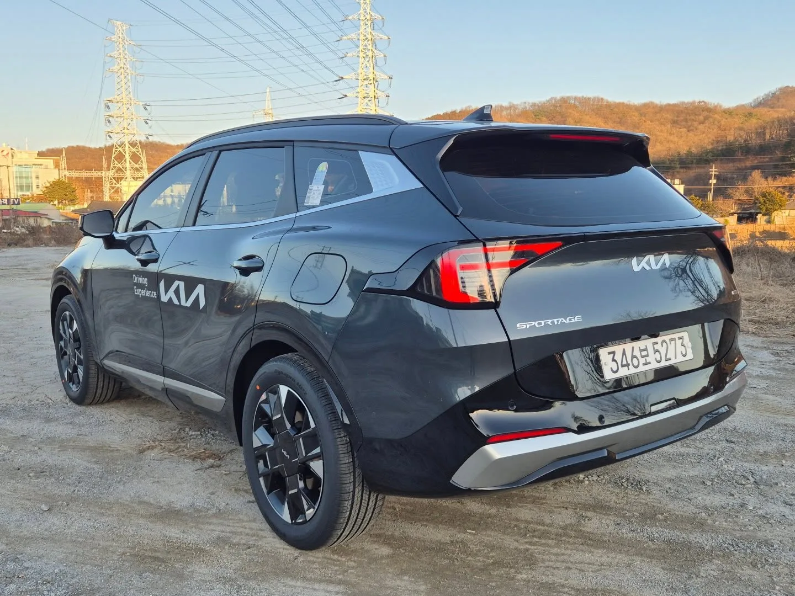
▲ 국내 번호판을 단 더 뉴 스포티지 하이브리드 시승차의 후측면. 리어램프와 테일게이트의 SPORTAGE 레터링, 은색 범퍼 하단 장식이 보인다 ⓒ Avante2025, Wikimedia Commons (CC BY 4.0)
📍 안전 평가는 어떻게 나왔나
국내 자동차안전도평가(KNCAP)에서는 부분변경 전 5세대 스포티지가 2021년 종합 1등급(94.1점)을 받아 그해 평가한 내연기관차 7종 가운데 최고점이었습니다(국토교통부 2021년 12월 21일 발표). 부분변경 모델을 다시 평가한 결과는 나오지 않았습니다. 미국 IIHS는 2025년 5월 이후 생산된 2026년형 스포티지(미국형)를 2025 톱 세이프티 픽+(TSP+)로 선정했습니다. 스몰 오버랩 정면, 강화된 부분 정면, 강화된 측면 충돌에서 모두 최고 등급(Good)을 받았습니다. 호주 Drive는 2022년 받은 ANCAP 별 다섯 개 등급이 부분변경 모델에도 유지된다고 전했습니다. 해외 평가는 현지 사양 기준이라 국내형과 장비 구성이 다를 수 있습니다.
7. 2026년 9월 기준 가격표와 트림 추천
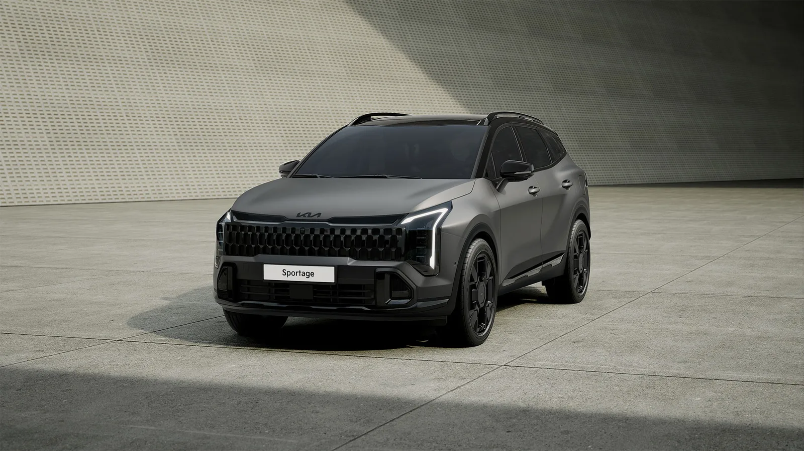
▲ 스포티지 X-Line. 전용 범퍼와 그릴, 19인치 휠, 블랙 스웨이드 헤드라이닝을 적용한 최상위 트림이다 사진=기아
현재 판매 중인 차는 8월 27일 출시된 2027년형입니다. 2026년형을 찾는다면 남은 재고차일 가능성이 높습니다. 아래 표는 기아 공식 가격표 기준입니다.
| 트림 | 1.6 가솔린 터보 | 2.0 LPi | 1.6T 하이브리드 (세제혜택 후) |
|---|---|---|---|
| 프레스티지 | 2,944 | 3,009 | 3,436 |
| 노블레스 | 3,322 | 3,387 | 3,803 |
| 시그니처 | 3,557 | 3,622 | 4,038 |
| X-Line | 3,622 | 3,687 | 4,103 |
| 블랙 에디션 | 3,587 | - | 4,068 |
※ 4WD는 1.6 가솔린 터보와 하이브리드에서 223만 원 옵션입니다. 하이브리드 세제혜택 전 가격은 프레스티지 3,536만 원부터 X-Line 4,203만 원까지입니다. 기아는 9월까지 계약하고 올해 안에 출고하는 고객에게 미성년 자녀 1명당 10만 원, 최대 50만 원의 기아샵 쿠폰을 줍니다.
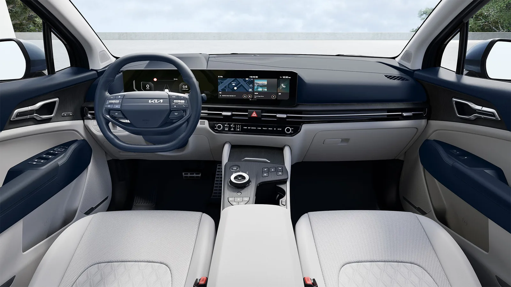
▲ 더 뉴 스포티지 실내. 내장 색상은 블랙·네이비 그레이·라운지 브라운 3가지다 사진=기아
추천은 '하이브리드 노블레스'입니다. 2027년형에서 노블레스에 후방 교차 충돌방지 보조, 후측방 충돌방지 보조(전진 출차), 안전 하차 보조, 전자식 차일드락, 동승석 전동시트와 워크인 디바이스가 기본으로 들어왔습니다. 아이를 태우는 가족이 체감하는 사양이 대부분 여기 모였습니다. 오너 평가에서 가장 낮았던 '가격' 불만, 즉 원하는 사양 때문에 윗급으로 올라가야 하는 구조가 이 트림에서 가장 많이 풀렸습니다.
- 예산이 가장 중요하다면 1.6T 프레스티지(2,944만 원): 12.3인치 내비게이션과 고속도로 주행 보조가 이미 들어가 있습니다. 연간 주행거리가 1만km 안팎이면 하이브리드와의 492만 원 차이를 연료비로 메우기 어렵습니다.
- 주행거리가 길면 하이브리드 노블레스(3,803만 원): 오너 실연비 16km/L대로 1.6T(10km/L대)와의 차이가 큽니다. 세제혜택 적용 가격 기준입니다.
- LPi는 연료비 최우선, 짐은 적은 경우: 실측 9km/L 안팎이지만 LPG 단가가 낮아 연료비는 가솔린보다 적습니다. 트렁크 바닥이 높고 4WD가 없는 점은 감수해야 합니다.
- 시그니처는 2열 열선이 꼭 필요할 때: 2열 열선시트와 리모트 폴딩 레버가 시그니처부터입니다. 블랙 에디션은 시그니처 기반인데 가솔린은 X-Line보다 35만 원 싸게 책정됐습니다.
- X-Line은 신중하게: 19인치 휠이 기본이라 하이브리드 복합 연비가 15.6km/L로 내려가고, 해외 매체들은 큰 휠에서 승차감이 더 거칠어진다고 지적했습니다.
8. 신형 투싼·셀토스·쏘렌토와 비교하면
| 항목 | 스포티지(2027년형) | 디 올 뉴 투싼 | 셀토스(3세대) | 쏘렌토(2027년형) |
|---|---|---|---|---|
| 전장/전폭 | 4,685 / 1,865mm | 4,700 / 1,905mm | 4,430 / 1,830mm | 4,815 / 1,900mm |
| 휠베이스 | 2,755mm | 2,785mm | 2,690mm | 2,815mm |
| 가솔린 시작가 | 2,944만 원(1.6T) | 10월 중 공개 예정(현대차 발표) | 2,512만 원(1.6T) | 3,641만 원(2.5T) |
| 하이브리드 가격 | 3,436만~4,103만 원 | 10월 중 공개 예정(현대차 발표) | 2,940만~3,636만 원 | 3,963만~4,670만 원(2WD) |
| 하이브리드 시스템 출력 | 235마력 | 245마력 | - | - |
| 하이브리드 복합 연비(최고) | 16.3km/L | 17.4km/L(현대차 발표) | 19.5km/L(16인치) | 15.7km/L(17인치, 5인승) |
| 좌석 | 5인승 | 5인승 | 5인승 | 5·6·7인승 |
※ 하이브리드 가격은 친환경차 세제혜택 적용 후 기준. 셀토스는 기아 가격표(2026년 9월 27일 조회), 쏘렌토는 2027년형 출시 자료 기준입니다. 신형 투싼은 8월 19일 디자인·차체 제원, 9월 18일 미디어 데이에서 파워트레인(1.6 터보 193마력, 하이브리드 시스템 245마력·복합 17.4km/L)이 공식 공개됐고, 가격은 현대차가 10월 중 공개하겠다고 밝혔습니다. 셀토스·쏘렌토 하이브리드는 시스템 출력 비교를 생략했습니다.
신형 투싼은 전장이 스포티지보다 15mm, 휠베이스가 30mm 길고, 전폭은 40mm 넓습니다. 실내 공간 우위가 스포티지의 가장 큰 무기였다는 점을 생각하면 뼈아픈 변화입니다. 현대차는 투싼 2열 머리 공간을 1,031mm로 늘렸다고 밝혔고, 하이브리드도 시스템 출력(245마력)과 공인 복합 연비(17.4km/L)에서 스포티지(235마력·16.3km/L)를 앞섭니다. 다만 가격이 아직 나오지 않았고, 완전변경 첫해에는 가격이 오르는 경우가 많습니다. 두 차의 차체 비교는 투싼 vs 스포티지 재비교 기사에 정리해 뒀습니다.
셀토스는 3세대로 바뀌며 하이브리드가 추가됐습니다. 하이브리드 기준 스포티지보다 500만 원가량 싸고 연비도 앞섭니다. 하지만 전장이 255mm, 휠베이스가 65mm 짧아 2열과 트렁크에서 한 체급 차이가 납니다. 2열에 성인이 자주 타거나 카시트를 두 개 설치해야 한다면 스포티지가 맞습니다.
쏘렌토 하이브리드는 같은 1.6T 하이브리드 계열이면서 3열을 고를 수 있습니다. 대신 하이브리드 시작가가 527만 원 높고 공인 연비는 조금 낮습니다. 스포티지 2열 공간이 이미 넉넉하다는 평가가 많아, 3열이 꼭 필요한 경우가 아니라면 스포티지로 충분하다는 계산이 나옵니다.
9. 이런 사람에게 맞고, 이런 사람에게는 안 맞는다
| 잘 맞는 사람 | 다시 생각해 볼 사람 |
|---|---|
| 아이 1~2명을 태우는 4인 가족. 2열 공간과 트렁크 턱 높이에서 동급 최상위권 평가 | 연비 최우선인 장거리 고속도로 운전자. 해외 매체들은 고속에서 하이브리드 효율이 떨어진다고 지적 |
| DCT가 부담스러웠던 운전자. 1.6T가 8단 자동으로 바뀌며 저속이 부드러워짐 | 운전 재미를 찾는 사람. 국내외 매체 모두 '무난하지만 감흥은 적다'는 쪽 |
| 연식이 바뀌어도 오래 탈 사람. 오너 실연비가 공인값에 근접하고 옵션 기본화로 사양이 충실 | 최신 모델을 원하는 사람. 현대차가 신형 투싼을 10월 중 판매한다고 밝혔고, 스포티지 후속 세대도 보도로 거론되는 시점 |
| LPG로 연료비를 줄이려는 사람. 국산 준중형 SUV 중 드문 LPi 선택지 | 물리 버튼 공조를 선호하는 사람. 공조·미디어 전환 패널에 대한 해외 매체 불만이 있음 |
| 눈길·비포장 대비 사륜구동이 필요한 사람. 1.6T와 하이브리드에서 4WD 선택 가능(223만 원) | 키 큰 가족이 파노라마 선루프를 원하는 경우. 2열 머리 공간이 줄어든다는 계측 결과. LPi로 사륜구동을 원하는 경우도 선택지가 없음 |
10. 요약
국내외 15개 매체의 시승기와 오너 실연비 데이터를 모아 보면, 부분변경 스포티지의 강점은 2열·트렁크 공간과 8단 자동으로 다듬어진 1.6T의 주행 질감입니다. 2열 공간은 짧은 차체의 유럽형을 탄 영국 매체 다수도 넉넉하다고 평가했습니다. 다만 Autocar는 머리 공간이 부족하다고 계측했습니다.
약점은 하이브리드 효율과 저속 승차감입니다. 해외 매체 대부분은 토요타·혼다 하이브리드보다 효율이 낮다고 평가했습니다. 다만 마이클에 기록한 국내 오너 7,377명의 하이브리드 실연비는 16.19km/L(최근 6개월 평균 15.78km/L)로 공인 16.3km/L에 근접합니다. 디젤은 국내에서 단종돼 1.6T·LPi·하이브리드 3종만 판매됩니다.
2027년형 가격은 1.6T 2,944만 원, 하이브리드 3,436만 원(세제혜택 후)부터이며, 가족용으로는 안전·편의 사양이 대거 기본화된 하이브리드 노블레스(3,803만 원)가 가장 균형이 좋습니다. 신형 투싼이 차체와 하이브리드 공인 연비에서 스포티지를 앞서지만 가격이 아직 나오지 않았으므로, 현대차가 10월 중 공개하겠다고 밝힌 투싼 가격을 보고 견적을 비교하는 것이 가장 합리적인 순서입니다.
![[시승기 종합] "부장님 차" 너머의 그랜저… 국내외 리뷰 11편이 입 모은 것과 엇갈린 것](../images/grandeurreview_front34.webp)